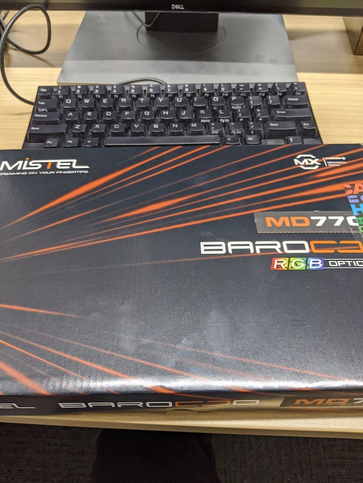
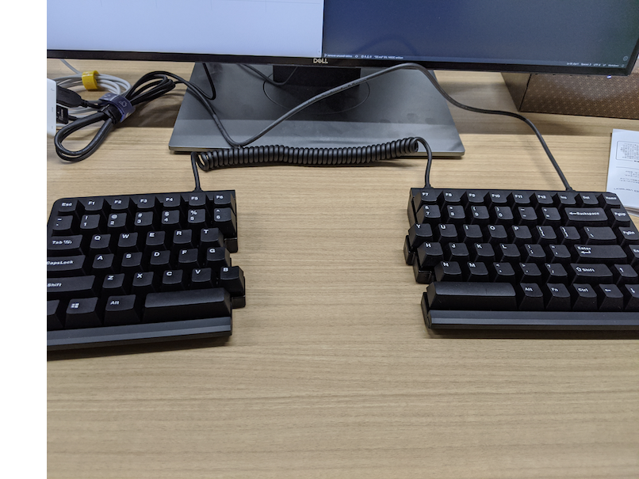

BAROCCO MD770を買った
Mistel社のBAROCCO MD770という左右分離式のキーボードを買った。


写真が雑すぎる。
1/30に発売されて急いで買いに行ったけど、すでに静音赤軸や茶軸は売り切れていたので、赤軸を買った。家で使っているHHKB professional BTに近い打ち心地で音も気にならないので不満はない。新卒の頃から使っていたHHKB Lite2とはここでお別れだ。
気になったこと
- 背面のDIPスイッチでCapsLockをControlと入れ替えられるはずなんだけど、なんかうまくいかなかったのでKarabiner-Elementsでremapした。
- ふだんbを右手で打っていたけど、左側にあるので左手で打たねばならない。しょっちゅう右手でbを打とうとして空振りしてしまう。
- BackspaceがEnterの直上にはなくて、バックスラッシュがある。Macのキーボードと同じなんだけど、ふだんHHKBを使っているとそこのレイアウトが違うのでかなり打ち間違える。
- 傾きをつけたいけど、つけるには付属品のゴムをつける必要があり、それには精密ドライバーみたいな小さいドライバーがいる。持ってなかったのであとで買う。
- USB接続がType-C to Type-Cかと思っていたら、PC側はType-Aだった。
- 見た目が無愛想なので、なんかキーキャップつけたい。Cherry MXのキースイッチなので対応しているキーキャップはけっこうありそう。